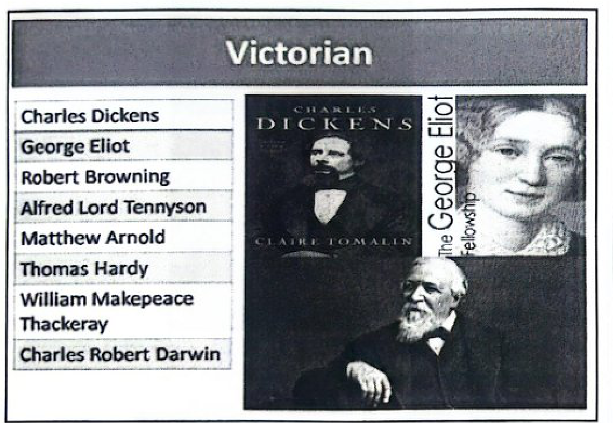
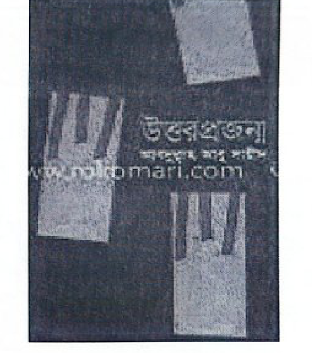
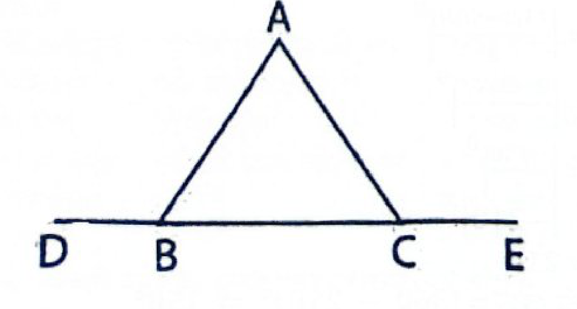
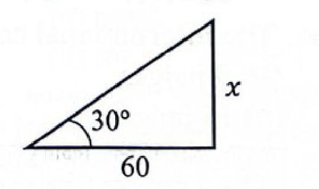
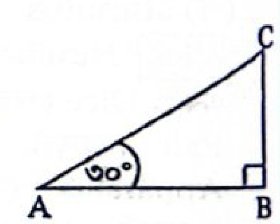

💡 মনে রাখুন: ‘সন্তাপ’ = সম্ + তাপ (ব্যঞ্জনে-ব্যঞ্জনে সন্ধি)। ‘পরশু’ শব্দটি সংস্কৃত 'পরশ্বস্' হতে আগত, অর্থ গতকালের পূর্বের দিন বা আগামীকালের পরের দিন।
📜
চর্যাপদের ৬টি অমর প্রবাদ ও পদকর্তা
প্রবাদ বাক্য
পদ নং ও পদকর্তা
প্রবাদের অর্থ
আপনা মাংসেঁ হরিণা বৈরী
৬নং পদ (ভুসুকুপা)
হরিণের মাংসই তার প্রধান শত্রু
হাতের কাঙ্কন মা লোউ দাপন
৩২নং পদ (সরহপা)
হাতের কাঁকন দেখতে আয়না লাগে না
হাড়িত ভাত নাহি নিতি আবেশী
৩৩নং পদ (ঢেণ্ঢণপা)
হাঁড়িতে ভাত নেই, অথচ প্রেমিকেরা ভিড় করে
দহিলা দুধ কি বেন্টে সামায়
৩৩নং পদ (ঢেণ্ঢণপা)
দোহন করা দুধ কি বাঁটে প্রবেশ করানো যায়?
বর সুন গোহালী কিমো দুঠ বলন্দেঁ
৩৯নং পদ (সরহপা)
দুষ্ট গরুর চেয়ে শূন্য গোয়াল ভালো
অপন চাহন্তে আন বিনঠা
৪৪নং পদ (কঙ্কণপা)
নিজেরটা চাইতে গিয়ে অন্যটি বিনষ্ট হলো
🇬🇧
English Literature & High-Yield Grammar
Victorian Period (1832–1901): প্রধান কবি Alfred Lord Tennyson (Poet Laureate), Robert Browning, Matthew Arnold। প্রধান ঔপন্যাসিক Charles Dickens, George Eliot (Mary Ann Evans), Thomas Hardy।
Preposition Traps: • Shocked at the news (ঘটনায় shocked at; ব্যক্তিতে shocked by)।
• Walk along the river (তীর বা রাস্তা ঘেঁষে চলা বোঝাতে along)।
🔍 Irregular Plural Words: • Datum → Data | Medium → Media | Radius → Radii | Analysis → Analyses
• Dice, Deer, Sheep, Cannon, Species, Salmon এর Singular ও Plural রূপ অভিন্ন।
সমান্তর ধারার সমষ্টি:
\(S_n = \frac{n}{2}[2a + (n-1)d]\) (৭+১৩+১৯+... ধারার ২০টি পদের যোগফল = ১২৮০)।
🇧🇩
শিশু আইন ও জুলাই বিপ্লব ফ্যাক্টশিট
• শিশু আইন ২০১৩: মোট অধ্যায় ১১টি, ধারা ৯৮টি। অনূর্ধ্ব ১৮ বছর বয়সী সবাই শিশু।
• জুলাই গণঅভ্যুত্থান ২০২৪: সরকারি গেজেট অনুযায়ী মোট শহীদ ৮৩৬ জন, আহত ১৪০১ জন। প্রথম শহীদ আবু সাঈদ (শিল্পকর্ম: 'উন্নত মম শির'), কনিষ্ঠ শহীদ আব্দুল আহাদ।
• দারিদ্র্য মানচিত্র ২০২২: জেলা পর্যায়ে সর্বোচ্চ দারিদ্র্য মাদারীপুর (৫৪.৮%), সর্বনিম্ন নোয়াখালী (৬.১%)।
• বর্ষপণ্য ২০২৫: আসবাবপত্র (ফার্নিচার); ২০২৪ সালের ছিল হস্তশিল্প।
• প্রথম জিআই পণ্য: ২০১৬ সালে জামদানি শাড়ি (বর্তমান মোট সংখ্যা ৩০+)।
🌍
আন্তর্জাতিক ফোরাম ও খনিজ সম্পদ
• জি-জিরো (G-Zero): ভুটানের প্রধানমন্ত্রী শেরিং তোবগের উদ্যোগে কার্বন-নেগেটিভ দেশগুলোর ফোরাম (সদস্য: ভুটান, পানামা, সুরিনাম, মাদাগাস্কার)।
• বিরল খনিজ (REE): পর্যায় সারণির ১৭টি মৌল। বিশ্বে সর্বোচ্চ মজুতদার চীন (৪ কোটি ৪০ লাখ টন)।
• আইসিসি (ICC): আন্তর্জাতিক অপরাধ আদালতের ১২৫তম সদস্য দেশ ইউক্রেন।
• স্টারলিংক: দক্ষিণ এশিয়ায় প্রথম মালদ্বীপে বাণিজ্যিক উপগ্রহ ইন্টারনেট সেবা চালু হয়।
স্কোর: ০ / ১০০
প্রশ্ন 1বাংলা • শব্দ প্রকরণ
কোনটি দেশি শব্দ?
সঠিক উত্তর: (গ) পেট
বাংলাদেশের আদিম আদিবাসীদের ভাষা ও সংস্কৃতির কিছু কিছু উপাদান বাংলায় রক্ষিত আছে। এসব শব্দকে দেশি শব্দ বলা হয়। যেমন- কুলা, গঞ্জ, চোঙ্গা, টোপর, ডাব, ডাগর, ঢেঁকি, পেট ইত্যাদি। 'পানি' হিন্দি শব্দ, 'চাবি' ও 'বোতল' পর্তুগিজ শব্দ।
প্রশ্ন 2বাংলাদেশ বিষয়াবলি • অর্থনীতি ও ব্যাংক ব্যবস্থা
কোন তফসিলিভুক্ত ব্যাংকটির লাইসেন্স স্থগিত করা হয়েছে?
সঠিক উত্তর: (গ) নগদ ডিজিটাল ব্যাংক পিএলসি
ডিজিটাল ফাইন্যান্সিয়াল সার্ভিস নগদের ডিজিটাল ব্যাংকিং লাইসেন্স আপাতত স্থগিত করা হয়েছে (২২ আগস্ট, ২০২৫)। তবে তাদের (নগদের) ডিজিটাল ব্যাংকিং লাইসেন্স প্রক্রিয়া পুনরায় রিভিউ (পর্যালোচনা) করা হবে। রিভিউ অনুযায়ী যদি তারা যোগ্য হয়, তাহলে পুনরায় তারা লাইসেন্স পাবে। উল্লেখ্য যে, গত ৩ জুন ২০২৪ বাংলাদেশের প্রথম ডিজিটাল ব্যাংক হিসেবে নগদ ডিজিটাল ব্যাংককে চূড়ান্ত অনুমোদন দেয় কেন্দ্রীয় ব্যাংক।
প্রশ্ন 3English • Parts of Speech
Verb of number is –
সঠিক উত্তর: (খ) enumerate
Noun: number | Verb: enumerate (গণনা করা) | Adj.: numerous / numerical | Adverb: Numerically। 'Number' নিজেও কখনো verb হিসেবে ব্যবহৃত হতে পারে, তবে প্রদত্ত অপশনে বিশুদ্ধ ক্রিয়াপদ হিসেবে 'enumerate' সর্বাধিক গ্রহণযোগ্য।
প্রশ্ন 4English • Determiners & Modifiers
Fill in the blanks with the correct qualifier: I still have ----- money.
সঠিক উত্তর: (ক) a little
Money (অর্থ) uncountable noun হওয়ায় এর পূর্বে qualifier হিসেবে 'a little' গ্রহণযোগ্য। অপরদিকে 'a few', 'quite a few' ও 'many' সর্বদা countable plural noun-এর পূর্বে বসে।
প্রশ্ন 5English • English Literature (Victorian Period)
Who is the famous poet of Victorian Age?
সঠিক উত্তর: (খ) Alfred Lord Tennyson

Alfred Lord Tennyson ভিক্টোরিয়ান যুগের (১৮৩২-১৯০১) প্রধান কবি ও Poet Laureate। Samuel Taylor Coleridge ও William Blake রোমান্টিক যুগের এবং T.S. Eliot আধুনিক যুগের কবি।
প্রশ্ন 6সাধারণ বিজ্ঞান • বিদ্যুৎ ও শক্তি
বাংলাদেশের সর্বোচ্চ ভোল্টেজ লেভেল সঞ্চালন লাইন কোনটি?
সঠিক উত্তর: (খ) ৪০০ কেভি
বাংলাদেশে বিদ্যুৎ সঞ্চালনে সর্বোচ্চ ভোল্টেজ লেভেল ৪০০ কেভি (যেমন: পায়রা-গোপালগঞ্জ-আমিনবাজার ৪০০ কেভি সঞ্চালন লাইন)। এর পূর্বে সর্বোচ্চ ছিল ২৩০ কেভি। উৎপাদনের ক্ষেত্রে জেনারেটিং ভোল্টেজ সাধারণত ১১ থেকে ১৫.৭৫ কেভি হয়ে থাকে।
প্রশ্ন 7English • Conditionals
Complete the following sentence: Had I known you were waiting outside, I -----
সঠিক উত্তর: (ঘ) would have invited you to come in
Third conditional-এর নিয়মানুযায়ী if/had যুক্ত conditional clause-এ past perfect tense থাকলে মূল clause-এ Subject + would have / could have / might have + verb-এর past participle (V3) বসে।
প্রশ্ন 8বাংলা • নজরুল সাহিত্য
কোনটি কাজী নজরুল ইসলামের রচনা নয়?
সঠিক উত্তর: (খ) বালুচর
‘বালুচর’ পল্লীকবি জসীমউদ্দীনের একটি বিখ্যাত কাব্যগ্রন্থ (১৯২৭)। এর বিখ্যাত কবিতা ‘প্রতিদান’। অন্যদিকে ‘কুহেলিকা’ নজরুলের উপন্যাস; ‘ছায়ানট’ কাব্যগ্রন্থ এবং ‘রুদ্রমঙ্গল’ প্রবন্ধগ্রন্থ।
প্রশ্ন 9গণিত • ভগ্নাংশ
একটি প্রকৃত ভগ্নাংশের লব ও হরের অন্তর ১ হলে ভগ্নাংশটি কত?
সঠিক উত্তর: (গ) x/(x+1)
প্রকৃত ভগ্নাংশের হর সর্বদা লব অপেক্ষা বড় হয় (লব < হর)। লব x হলে হর হবে (x + 1)। সুতরাং প্রকৃত ভগ্নাংশটি হবে x/(x + 1)।
প্রশ্ন 10গণিত • বীজগাণিতিক উৎপাদক
x²-1+2y-y² এর একটি উৎপাদক নিচের কোনটি?
সঠিক উত্তর: (ক) x+y-1
x² - 1 + 2y - y² = x² - (y² - 2y + 1) = x² - (y - 1)² = {x + (y - 1)}{x - (y - 1)} = (x + y - 1)(x - y + 1)। অতএব একটি উৎপাদক হলো (x + y - 1)।
প্রশ্ন 11মানসিক দক্ষতা • সংখ্যা ধারা
শূন্যস্থানে কোন সংখ্যাটি বসবে? ২১২, ১৭৯, ১৪৬, ১১৩, -----
সঠিক উত্তর: (খ) ৮০
ধারাটির প্রতিটি পদ পূর্ববর্তী পদের চেয়ে ৩৩ করে কম: ২১২ - ৩৩ = ১৭৯; ১৭৯ - ৩৩ = ১৪৬; ১৪৬ - ৩৩ = ১১৩; ১১৩ - ৩৩ = ৮০।
প্রশ্ন 12বাংলা • ভাষা ও ভাষা পরিবার
কোনটি ভাষা-পরিবারের নাম নয়?
সঠিক উত্তর: (খ) আফ্রিকা
ইন্দো-ইউরোপীয় ও অস্ট্রো-এশীয় হলো প্রধান ভাষা-পরিবার। ইন্দো-ইরানীয় হলো ইন্দো-ইউরোপীয় পরিবারের অন্যতম প্রধান শাখা। অন্যদিকে ‘আফ্রিকা’ একটি মহাদেশের নাম, কোনো মূল ভাষা-পরিবারের নাম নয় (আফ্রিকার ভাষা পরিবার হলো নাইজার-কঙ্গো, আফ্রো-এশিয়াটিক ইত্যাদি)।
প্রশ্ন 13English • Shakespearean Drama
What kind of play is 'Julius Caesar'?
সঠিক উত্তর: (ঘ) historical tragedy
'Julius Caesar' উইলিয়াম শেকসপিয়রের ১৫৯৯ সালে রচিত একটি বিখ্যাত রোমান ঐতিহাসিক ট্র্যাজেডি (Historical Tragedy)।
প্রশ্ন 14বাংলা • সমার্থক শব্দ
অনীক এর সমার্থক শব্দ কোনটি?
সঠিক উত্তর: (ঘ) সিপাহি
‘অনীক’ শব্দের অর্থ সৈনিক, সৈন্য বা সৈন্যবাহিনী। সুতরাং সমার্থক শব্দ ‘সিপাহি’। ঘোড়া = অশ্ব, তুরঙ্গ; তরঙ্গ = ঢেউ, ঊর্মি; অসি = তলোয়ার, খড়্গ।
প্রশ্ন 15আন্তর্জাতিক বিষয়াবলি • মহাকাশ বিজ্ঞান ও প্রযুক্তি
বিশ্বের প্রথম পুনর্ব্যবহারযোগ্য রকেট-
সঠিক উত্তর: (গ) স্টারশিপ
স্টারশিপ (Starship) ইলন মাস্কের মহাকাশ সংস্থা SpaceX-এর তৈরি বিশ্বের প্রথম সম্পূর্ণ পুনর্ব্যবহারযোগ্য সুপার হেভি রকেট ও মহাকাশযান।
প্রশ্ন 16গণিত • বয়স ও অনুপাত
পিতা ও পুত্রের বয়সের সমষ্টি ৮৪ বছর। ১০ বছর পূর্বে তাদের বয়সের অনুপাত ৫:৩ ছিল। ১০ বছর পর এ অনুপাত কত হবে?
সঠিক উত্তর: (খ) ১৫:১১
ধরি, ১০ বছর পূর্বে পিতার বয়স ছিল 5x এবং পুত্রের 3x। বর্তমানে পিতার বয়স = (5x + 10) এবং পুত্রের = (3x + 10)। প্রশ্নমতে, (5x + 10) + (3x + 10) = 84 বা, 8x + 20 = 84 বা, 8x = 64 বা, x = 8। বর্তমানে পিতার বয়স = 50 বছর এবং পুত্রের = 34 বছর। ১০ বছর পর পিতার বয়স হবে ৬০ এবং পুত্রের ৪৪ বছর। অনুপাত = ৬০ : ৪৪ = ১৫ : ১১।
প্রশ্ন 17বাংলা • ধ্বনি ও বর্ণ প্রকরণ
উচ্চারণ স্থান অনুযায়ী ব্যঞ্জনবর্ণ কয় ভাগে বিভক্ত?
সঠিক উত্তর: (খ) ৫ ভাগ
উচ্চারণ স্থান অনুযায়ী ব্যঞ্জনবর্ণ ৫ ভাগে বিভক্ত: ১) কণ্ঠ্য বা জিহ্বামূলীয় (ক-বর্গ), ২) তালব্য (চ-বর্গ), ৩) মূর্ধন্য বা পশ্চাৎ দন্তমূলীয় (ট-বর্গ), ৪) দন্ত্য (ত-বর্গ), এবং ৫) ওষ্ঠ্য (প-বর্গ)।
প্রশ্ন 18বাংলাদেশ বিষয়াবলি • জুলাই গণঅভ্যুত্থান ২০২৪
সরকারি গেজেটে, জুলাই গণঅভ্যুত্থানের মোট শহীদ?
সঠিক উত্তর: (ক) ৮৩৬
সরকারি গেজেট অনুযায়ী, ২ আগস্ট ২০২৫ পর্যন্ত শহীদের সংখ্যা ছিল ৮৪৪ জন এবং ১৪০১ জন আহতগণ 'জুলাই যোদ্ধা' নামে অভিহিত হন। পরবর্তীতে অভিযোগ ও দ্বৈততার কারণে ৮ জনের গেজেট বাতিল করায় চূড়ান্ত তালিকা অনুযায়ী মোট শহীদের সংখ্যা দাঁড়ায় ৮৩৬ জন।
কোন পণ্যটিকে ২০২৫ সালের বর্ষপণ্য হিসেবে ঘোষণা করা হয়েছে?
সঠিক উত্তর: (গ) আসবাবপত্র
২০২৫ সালের জন্য 'আসবাবপত্র' বা ফার্নিচারকে জাতীয় বর্ষপণ্য হিসেবে ঘোষণা করেছেন অন্তর্বর্তী সরকারের প্রধান উপদেষ্টা ড. মুহাম্মদ ইউনূস। ২০২৪ সালের বর্ষপণ্য ছিল হস্তশিল্পজাত পণ্য।
প্রশ্ন 20বাংলা • আধুনিক বাংলা সাহিত্য
‘উত্তর প্রজন্ম’ গ্রন্থের লেখক কে?
সঠিক উত্তর: (ক) আব্দুল মান্নান সৈয়দ

‘উত্তর প্রজন্ম’ আধুনিক কবি, কথাসাহিত্যিক ও বিশিষ্ট গবেষক আব্দুল মান্নান সৈয়দ রচিত বিখ্যাত গ্রন্থ।
প্রশ্ন 21আন্তর্জাতিক বিষয়াবলি • খনিজ ও প্রাকৃতিক সম্পদ
বিরল খনিজ মজুতে শীর্ষ দেশ-
সঠিক উত্তর: (ক) চীন
ইউএস জিওলজিক্যাল সার্ভে (USGS)-এর তথ্যমতে বিশ্বে বিরল খনিজ (Rare Earth Elements - REE) মজুতে শীর্ষ দেশ চীন (প্রায় ৪ কোটি ৪০ লাখ মেট্রিক টন)। পর্যায় সারণির ল্যান্থানাইড সিরিজের ১৫টি মৌল এবং স্ক্যান্ডিয়াম ও ইত্রিয়াম মিলিয়ে ১৭টি ধাতুকে বিরল খনিজ বলা হয়।
প্রশ্ন 22আন্তর্জাতিক বিষয়াবলি • আন্তর্জাতিক সংস্থা ও সাম্প্রতিক ঘটনা
সম্প্রতি আন্তর্জাতিক মানবাধিকার সংস্থা অ্যামনেস্টি ইন্টারন্যাশনালকে নিষিদ্ধ ঘোষণা করেছে কোন দেশ?
সঠিক উত্তর: (গ) রাশিয়া
রাশিয়া আন্তর্জাতিক মানবাধিকার সংস্থা অ্যামনেস্টি ইন্টারন্যাশনালকে রাশিয়ায় নিষিদ্ধ ঘোষণা করে এবং একে 'অবাঞ্ছিত সংস্থা' (undesirable organization) হিসেবে তালিকাভুক্ত করেছে।
প্রশ্ন 23আন্তর্জাতিক বিষয়াবলি • বিশ্ব অর্থনীতি
বর্তমান বিশ্বের শীর্ষ ঋণদাতা দেশ-
সঠিক উত্তর: (গ) জার্মানি
দীর্ঘ ৩৪ বছর পর জাপানকে পেছনে ফেলে জার্মানি বর্তমানে বিশ্বের শীর্ষ নিট ঋণদাতা দেশ হিসেবে আবির্ভূত হয়েছে। ২০২৪ সালের শেষ নাগাদ জার্মানির নিট বৈদেশিক সম্পদ ছিল ৫৬৯.৬৫ ট্রিলিয়ন ইয়েন সমমূল্যের।
প্রশ্ন 24বাংলাদেশ বিষয়াবলি • জাতীয় ও আন্তর্জাতিক দিবস
কৃষক দিবস পালিত হয়-
সঠিক উত্তর: (ক) ৩০ জানুয়ারি
বাংলাদেশে ২০২৫ সাল থেকে আনুষ্ঠানিকভাবে ৩০ জানুয়ারি 'কৃষক দিবস' হিসেবে পালিত হচ্ছে। এর প্রতিপাদ্য ছিল: “কৃষকবান্ধব প্রযুক্তির সম্প্রসারণই হোক আমাদের অঙ্গীকার”।
প্রশ্ন 25মানসিক দক্ষতা • ঘড়ির কোণ নির্ণয়
ঘড়িতে এখন ৭টা বাজে। ঘণ্টার কাঁটা ও মিনিটের কাঁটার মধ্যবর্তী কোণের পরিমাপ কত?
নদী বা রাস্তার সমান্তরালে বা পাশ ঘেঁষে চলা বোঝাতে preposition হিসেবে 'along' বসে। 'Let us go for a walk along the river' অর্থ চল নদীর ধার ঘেঁষে হাঁটি।
প্রশ্ন 27সাধারণ বিজ্ঞান • মানবদেহ ও রক্ত সংবহন
হৃৎপিণ্ডের আবৃতকারী পর্দার নাম কী?
সঠিক উত্তর: (খ) পেরিকার্ডিয়াম
হৃৎপিণ্ডের দ্বিস্তরবিশিষ্ট পাতলা আবরক পর্দার নাম পেরিকার্ডিয়াম (Pericardium)। ফুসফুসের আবরণী হলো প্লুরা এবং উদরগহ্বরের অঙ্গসমূহের আবরণী পেরিটোনিয়াম।
প্রশ্ন 28বাংলা • দ্বিরুক্ত শব্দ ও শব্দদ্বৈত
পরপর প্রয়োগ হওয়া কাছাকাছি চেহারার শব্দকে কী বলে?
সঠিক উত্তর: (খ) অনুক্কার দ্বিত্ব
পরপর প্রয়োগ হওয়া কাছাকাছি চেহারার শব্দকে 'অনুকার দ্বিত্ব' বলে। এতে দ্বিতীয় শব্দটি প্রথমটির অনুসরণে গঠিত কিন্তু প্রায় ক্ষেত্রে অর্থহীন হয় (যেমন: অংক-টংক, আম-টাম, চাকর-বাকর)।
প্রশ্ন 29বাংলা • বাংলা সাহিত্য ও বিখ্যাত উক্তি
"ঘটনার চেয়ে রটনার রূপ বেশি বিচিত্র এবং গতিবেগও প্রকাণ্ড" কোন গ্রন্থের উক্তি?
সঠিক উত্তর: (খ) সেই সময়
‘ঘটনার চেয়ে রটনার রূপ বেশি বিচিত্র এবং গতিবেগও প্রকাণ্ড’ - বিখ্যাত ঔপন্যাসিক সুনীল গঙ্গোপাধ্যায়ের আকাদেমি পুরস্কারপ্রাপ্ত কালজয়ী ঐতিহাসিক উপন্যাস ‘সেই সময়’ থেকে উদ্ধৃত।
প্রশ্ন 30গণিত • জ্যামিতি (ত্রিভুজ)
সমবাহু ত্রিভুজের একটি বাহুকে উভয় দিকে বর্ধিত করলে উৎপন্ন বহিঃস্থ কোণদ্বয়ের যোগফল কত ডিগ্রি?
সঠিক উত্তর: (ঘ) ২৪০

সমবাহু ত্রিভুজের প্রতিটি অন্তঃস্থ কোণ ৬০°। যে কোনো একটি বাহুকে উভয় দিকে বর্ধিত করলে উৎপন্ন প্রতিটি বহিঃস্থ কোণ = ১৮০° - ৬০° = ১২০°। অতএব বহিঃস্থ কোণদ্বয়ের সমষ্টি = ১২০° + ১২০° = ২৪০°।
প্রশ্ন 31বাংলাদেশ বিষয়াবলি • মেগা প্রকল্প ও আন্তর্জাতিক সহযোগিতা
বঙ্গোপসাগরীয় অঞ্চলে নিম্নের কোন প্রজেক্টটি চলমান?
সঠিক উত্তর: (খ) BIG-B
BIG-B (Bay of Bengal Industrial Growth Belt) হলো বাংলাদেশ ও জাপানের যৌথ উদ্যোগে বঙ্গোপসাগর অঞ্চলে শিল্পায়ন ও অবকাঠামো উন্নয়নের একটি মেগা ইনিশিয়েটিভ। এর কেন্দ্রে রয়েছে মাতারবাড়ী গভীর সমুদ্র বন্দর ও বিদ্যুৎ কেন্দ্র।
প্রশ্ন 32English • Parts of Speech (Adverb)
Its too soon to say if he will survive. Here too is a/an-
সঠিক উত্তর: (খ) adverb
বাক্যটিতে 'soon' হলো adverb of time, আর 'too' শব্দটির মাত্রা নির্দেশ করে তাকে modify করছে। Adverb-কে modify করায় 'too' একটি Adverb (adverb of degree)।
প্রশ্ন 33বাংলা • চর্যাপদ ও প্রাচীন যুগ
'অপন চাহন্তে আন বিনঠা' চর্যাপদের এই প্রবাদ বাক্যের রচয়িতা কে?
সঠিক উত্তর: (ঘ) কঙ্কণপা
চর্যাপদের ৪৪ নম্বর পদের পদকর্তা কঙ্কণপা। তাঁর পদে উল্লেখিত প্রবাদবাক্যটি হলো ‘অপন চাহন্তে আন বিনঠা’ (নিজেরটি চাইতে গিয়ে অন্যটি নষ্ট হলো)। চর্যাপদের মোট প্রবাদ ৬টি।
প্রশ্ন 34বাংলা • লিঙ্গ পরিবর্তন
সতীন শব্দটি কী বাচক শব্দ?
সঠিক উত্তর: (গ) নিত্য নারীবাচক
যেসব শব্দের কোনো পুরুষবাচক রূপ হয় না, সেগুলোকে নিত্য স্ত্রীবাচক বা নিত্য নারীবাচক শব্দ বলে। যেমন: সতীন, সৎমা, এয়ো, সধবা, বন্ধ্যা, কুলটা, ডাইনি ইত্যাদি।
প্রশ্ন 35বাংলাদেশ বিষয়াবলি • শিশু অধিকার ও আইন
শিশু আইন ২০১৩ এ কয়টি অধ্যায় রয়েছে?
সঠিক উত্তর: (গ) ১১
বাংলাদেশ শিশু আইন ২০১৩-এ মোট ১১টি অধ্যায় এবং ৯৮টি ধারা রয়েছে। এ আইনে ১৮ বছর পর্যন্ত প্রত্যেককে শিশু হিসেবে সংজ্ঞায়িত করা হয়েছে।
প্রশ্ন 36English • Vocabulary & Synonyms
Something which is obnoxious means that it is-
সঠিক উত্তর: (ঘ) very unpleasant
'Obnoxious' শব্দের অর্থ অত্যন্ত আপত্তিকর, অপ্রীতিকর বা বিরক্তিকর (extremely unpleasant, disagreeable, or offensive)।
প্রশ্ন 37গণিত • বীজগণিত ও সূচক
∛(1+x) = 2 হলে x এর মান কত?
সঠিক উত্তর: (ঘ) ৭
∛(1 + x) = 2। উভয় পক্ষে ঘন (cube) করে পাই: 1 + x = 2³ = 8 বা, x = 8 - 1 = 7।
প্রশ্ন 38বাংলা • পত্র-পত্রিকা ও সাময়িকী
কোনটি শিশু কিশোর বিষয়ক পত্রিকা?
সঠিক উত্তর: (গ) ধান শালিকের দেশ
‘ধান শালিকের দেশ’ বাংলা একাডেমি থেকে প্রকাশিত একটি ঐতিহ্যবাহী ত্রৈমাসিক কিশোর সাহিত্য পত্রিকা। এটি প্রথম প্রকাশিত হয় ১৯৭৩ সালে।
প্রশ্ন 39আন্তর্জাতিক বিষয়াবলি • প্রতিরক্ষা ও সামরিক প্রযুক্তি
Typhoon Block-4 হাইপারসনিক মিসাইল কোন দেশের?
সঠিক উত্তর: (খ) তুরস্ক
টাইফুন ব্লক-৪ (Typhoon Block-4) হলো তুরস্কের তৈরি অত্যাধুনিক স্বল্প ও মধ্যম পাল্লার ব্যালিস্টিক ও হাইপারসনিক ক্ষেপণাস্ত্র।
প্রশ্ন 40গণিত • লাভ ও ক্ষতি
টাকায় ৫ টি লেবু ক্রয় করে টাকায় ৪টি বিক্রি করলে শতকরা কত টাকা লাভ হবে?
y - [y - {y - (y + 1)}] = y - [y - {y - y - 1}] = y - [y - {-1}] = y - [y + 1] = y - y - 1 = -1।
প্রশ্ন 42বাংলাদেশ বিষয়াবলি • চলচ্চিত্র ও পুরস্কার
৭৮তম কান চলচ্চিত্র পুরস্কারে কোন বাংলাদেশি চলচ্চিত্র বিশেষ স্বীকৃতি লাভ করে?
সঠিক উত্তর: (খ) আলী
৭৮তম কান চলচ্চিত্র উৎসবে পরিচালক আদনান আল রাজীবের স্বল্পদৈর্ঘ্য চলচ্চিত্র ‘আলী’ বিশেষ স্বীকৃতি লাভ করে। চলচ্চিত্রটি স্বল্পদৈর্ঘ্য শাখায় স্পেশাল মেনশন পুরস্কার পেয়ে ইতিহাস সৃষ্টি করে।
প্রশ্ন 43বাংলাদেশ বিষয়াবলি • ব্যক্তিত্ব ও জাতীয় পুরস্কার
ড. মুহাম্মদ ইউনূস প্রেসিডেন্ট অ্যাওয়ার্ড পান কত সালে?
সঠিক উত্তর: (ক) ১৯৭৮
ড. মুহাম্মদ ইউনূস গ্রামীণ দারিদ্র্য বিমোচন ও কর্মসংস্থানে অবদানের জন্য ১৯৭৮ সালে বাংলাদেশ সরকারের প্রেসিডেন্ট পুরস্কার লাভ করেন। তিনি ১৯৮৪ সালে র্যামন ম্যাগসেসে, ১৯৮৭ সালে স্বাধীনতা পদক এবং ২০০৬ সালে শান্তিতে নোবেল পুরস্কার লাভ করেন।
প্রশ্ন 44English • One Word Substitution
Love for the whole world is called-
সঠিক উত্তর: (ঘ) philanthropy
Philanthropy = মানবপ্রেম বা বিশ্বপ্রেম (love of mankind or human society)। Misanthropy = মানববিদ্বেষ; Misogyny = নারীবিদ্বেষ; Benevolence = পরোপকারিতা।
প্রশ্ন 45বাংলা • ফোর্ট উইলিয়াম কলেজ ও গদ্যের বিকাশ
‘ইতিহাস মালা’ গ্রন্থটি কত সালে প্রকাশিত হয়?
সঠিক উত্তর: (গ) ১৮১২
উইলিয়াম কেরি রচিত বাংলা ভাষার প্রথম গল্পসংগ্রহ ‘ইতিহাসমালা’ ১৮১২ সালে শ্রীরামপুর মিশন প্রেস থেকে প্রকাশিত হয়। এতে ১৫০টি লৌকিক গল্প সংকলিত হয়েছে।
ব্যাকরণের 'অর্থতত্ত্ব' (Semantics)-এর আলোচ্য বিষয় হলো শব্দের অর্থবিচার, অর্থের প্রকারভেদ, মুখ্যার্থ, গৌণার্থ, বিপরীত শব্দ, প্রতিশব্দ, শব্দজোড় এবং বাগধারা।
প্রশ্ন 47আন্তর্জাতিক বিষয়াবলি • জাতিসংঘ ও আন্তর্জাতিক সনদ
UN Convention on the Rights of Children কত সালে জাতিসংঘ কর্তৃক গৃহীত হয়?
সঠিক উত্তর: (ঘ) ২০ নভেম্বর, ১৯৮৯
জাতিসংঘের সাধারণ পরিষদ ১৯৮৯ সালের ২০ নভেম্বর শিশু অধিকার সনদ (UNCRC) সর্বসম্মতিক্রমে গ্রহণ করে। ১৯৯০ সালের ২ সেপ্টেম্বর এটি কার্যকর হয়।
প্রশ্ন 48গণিত • চক্রবৃদ্ধি ও সরল মুনাফা
১০% হার মুনাফায় ৬০০০ টাকার ৩ বছরের চক্রবৃদ্ধি মুনাফা ও সরল মুনাফার পার্থক্য কত?
সঠিক উত্তর: (ক) ১৮৬
সরল মুনাফা I = Prn = ৬০০০ × ০.১ × ৩ = ১৮০০ টাকা। ৩ বছরের চক্রবৃদ্ধি মূলধন C = ৬০০০ × (১.১)³ = ৬০০০ × ১.৩৩১ = ৭৯৮৬ টাকা। চক্রবৃদ্ধি মুনাফা = ৭৯৮৬ - ৬০০০ = ১৯৮৬ টাকা। পার্থক্য = ১৯৮৬ - ১৮০০ = ১৮৬ টাকা।
প্রশ্ন 49বাংলা • যুক্তবর্ণের প্রকারভেদ
যুক্তবর্ণ কয় প্রকার?
সঠিক উত্তর: (ক) দুই প্রকার
গঠন রূপের ভিত্তিতে বাংলা বর্ণমালার যুক্তবর্ণ দুই প্রকার: ১) স্বচ্ছ যুক্তবর্ণ (যেখানে মূল বর্ণগুলো চেনা যায়, যেমন: ক্ট, গ্ধ, স্প); এবং ২) অস্বচ্ছ যুক্তবর্ণ (যেখানে বর্ণের মূল রূপ পরিবর্তিত হয়ে ভিন্ন রূপ নেয়, যেমন: ক্ত, ক্ষ, জ্ঞ, ষ্ণ)।
প্রশ্ন 50বাংলাদেশ বিষয়াবলি • জুলাই গণঅভ্যুত্থান ও শিল্পকর্ম
জুলাই গণঅভ্যুত্থানের শহীদ আবু সাঈদকে নিয়ে অঙ্কিত শিল্পকর্মের নাম কি?
সঠিক উত্তর: (ক) উন্নত মম শির
জুলাই গণঅভ্যুত্থানের প্রথম বীর শহীদ আবু সাঈদের বুক পেতে দাঁড়ানোর অমর মুহূর্তকে নিয়ে অঙ্কিত শিল্পকর্মের নাম ‘উন্নত মম শির’। চিত্রকর্মটি অঙ্কন করেন প্রখ্যাত শিল্পী শহীদ কবির এবং এটি রংপুর পুলিশ লাইন মাঠে স্থাপিত।
প্রশ্ন 51বাংলা • শব্দার্থ
‘পরশু’ শব্দটির অর্থ কী?
সঠিক উত্তর: (খ) পরশু
সংস্কৃত 'পরশ্বস্' থেকে জাত তদ্ভব শব্দ ‘পরশু’। এর অর্থ হলো গতকালের পূর্ববর্তী দিন অথবা আগামীকালের পরবর্তী দিন।
প্রশ্ন 52English • Number (Singular/Plural)
Which of the following is in plural form-
সঠিক উত্তর: (খ) media
'Media' হলো ল্যাটিন 'Medium' এর বহুবচন (Plural)। অন্যদিকে Datum (sing.) → Data (pl.), Analysis (sing.) → Analyses (pl.), Radius (sing.) → Radii (pl.)।
প্রশ্ন 53English • Voice Change
The passive form of 'The news shocked him'
সঠিক উত্তর: (গ) He was shocked at the news
Shocked, surprised, astonished প্রভৃতি verb-এর ক্ষেত্রে ব্যক্তি নয় এমন বিষয়ে passive voice-এ 'by'-এর পরিবর্তে preposition হিসেবে 'at' বসে। সুতরাং সঠিক বাক্য: 'He was shocked at the news'।
প্রশ্ন 54English • Gerund & Participle
Choose the correct sentence-
সঠিক উত্তর: (গ) He likes jogging
'Like' verb-এর পর সাধারণ শখ বা অভ্যাস বোঝাতে Gerund (verb + ing) বসে। সুতরাং 'He likes jogging' শুদ্ধ।
প্রশ্ন 55সাধারণ বিজ্ঞান • জীবপ্রযুক্তি ও পরিবেশ
‘সুপার বাগ’ কি কাজে ব্যবহার হয়?
সঠিক উত্তর: (খ) সমুদ্রের তেল অপসারণে
‘সুপারবাগ’ হলো জিন প্রকৌশলের মাধ্যমে উদ্ভাবিত বিশেষ ব্যাক্টেরিয়া (Pseudomonas putida), যা সমুদ্রে ছড়িয়ে পড়া ক্ষতিকর হাইড্রোকার্বন ও ভাসমান অপরিশোধিত তেল দ্রুত ভেঙে পরিষ্কার করতে সক্ষম।
প্রশ্ন 56সাধারণ বিজ্ঞান • জ্বালানি ও বিদ্যুৎ উৎপাদন
কোন জ্বালানিতে বিদ্যুৎ উৎপাদন খরচ বেশি?
সঠিক উত্তর: (খ) তরল জ্বালানি
বিদ্যুৎ উৎপাদনে ব্যবহৃত জ্বালানিগুলোর মধ্যে সবচেয়ে বেশি উৎপাদন ব্যয় তরল জ্বালানিতে (ডিজেল ও ফার্নেস অয়েল)। সবচেয়ে কম খরচ জলবিদ্যুৎ ও গ্যাসে।
প্রশ্ন 57গণিত • মৌলিক সংখ্যা
১ হতে ৩০ পর্যন্ত কয়টি মৌলিক সংখ্যা রয়েছে?
সঠিক উত্তর: (গ) ১০টি
১ থেকে ৩০ পর্যন্ত মৌলিক সংখ্যা মোট ১০টি: ২, ৩, ৫, ৭, ১১, ১৩, ১৭, ১৯, ২৩ ও ২৯।
প্রশ্ন 58English • One Word Substitution
One who is fond of fighting-
সঠিক উত্তর: (ক) Bellicose
'Bellicose' (রণপ্রিয় বা যুদ্ধপ্রিয়) means demonstrating aggression and willingness to fight / fond of fighting। Aggressive = আক্রমণাত্মক; Militant = চরমপন্থী।
প্রশ্ন 59English • English Literature
'The Tempest' by Shakespeare is a-
সঠিক উত্তর: (খ) Drama
'The Tempest' উইলিয়াম শেকসপিয়রের শেষ নাটক (Drama / Romantic Comedy)। শেকসপিয়র কোনো উপন্যাস (Novel) রচনা করেননি।
প্রশ্ন 60গণিত • জ্যামিতি (কোণ নির্ণয়)
একটি ত্রিভুজের একটি কোণ যদি ২য় কোণের তিনগুণ এবং ৩য় কোণ যদি ২ কোণের চেয়ে ৩০ ডিগ্রি বড় হয় তবে প্রথম কোণটি কত ডিগ্রি?
সঠিক উত্তর: (ঘ) ৯০
ধরি, ২য় কোণ = x। ১ম কোণ = 3x এবং ৩য় কোণ = x + 30°। ত্রিভুজের তিন কোণের সমষ্টি ১৮০°। প্রশ্নমতে, 3x + x + (x + 30°) = 180° বা, 5x = 150° বা, x = 30°। অতএব প্রথম কোণ = 3x = 3 × 30° = 90°।
প্রশ্ন 61বাংলা • মুক্তিযুদ্ধভিত্তিক নাটক
কোনটি মুক্তিযুদ্ধ বিষয়ক নাটক?
সঠিক উত্তর: (ঘ) পায়ের আওয়াজ পাওয়া যায়
‘পায়ের আওয়াজ পাওয়া যায়’ সৈয়দ শামসুল হক রচিত মুক্তিযুদ্ধের পটভূমিতে রচিত বিখ্যাত কাব্যনাটক। ‘রক্তাক্ত প্রান্তর’ পানিপথের ৩য় যুদ্ধভিত্তিক (মুনীর চৌধুরী); ‘নুরলদীনের সারাজীবন’ ঐতিহাসিক কৃষক বিদ্রোহভিত্তিক।
প্রশ্ন 62কম্পিউটার ও তথ্যপ্রযুক্তি • কৃত্রিম বুদ্ধিমত্তা (AI)
Who is the pioneer of artificial intelligence (AI)
সঠিক উত্তর: (খ) John McCarthy
জন ম্যাকার্থি (John McCarthy) ১৯৫৬ সালের ডার্টমাউথ সম্মেলনে সর্বপ্রথম 'Artificial Intelligence' শব্দটি প্রবর্তন করেন এবং কৃত্রিম বুদ্ধিমত্তার মৌলিক গবেষণার সূচনা করায় তাঁকে AI-এর জনক ও অগ্রদূত বলা হয়।
যে বিশেষ্য পদ দ্বারা দিন, বার, মাস বা ঋতুর নির্দিষ্ট নাম বোঝায়, তাকে কালনাম শ্রেণির সংজ্ঞাবাচক বিশেষ্য বলে। যেমন: বৈশাখ, জ্যৈষ্ঠ, সোমবার, কার্তিক ইত্যাদি।
প্রশ্ন 65আন্তর্জাতিক বিষয়াবলি • বিশ্বের প্রথম ও সমাজকল্যাণ
Which country was the first to introduce old age pension?
সঠিক উত্তর: (গ) Germany
১৮৮৯ সালে জার্মানির চ্যান্সেলর অটো ফন বিসমার্ক বিশ্বে সর্বপ্রথম সামাজিক নিরাপত্তা ও বৃদ্ধ বয়সকালীন পেনশন (Old Age Pension) আইন প্রণয়ন ও প্রবর্তন করেন।
প্রশ্ন 66English • Vocabulary
The word ecological is related to-
সঠিক উত্তর: (গ) environment
Ecology বা বাস্তুসংস্থান হলো জীব এবং তার চারপাশের পরিবেশের আন্তঃসম্পর্কীয় বিজ্ঞান। সুতরাং Ecological শব্দটি সরাসরি 'environment' (পরিবেশ)-এর সাথে সম্পর্কিত।
প্রশ্ন 67English • Spelling
Choose the correct spelling-
সঠিক উত্তর: (ক) repetition
শুদ্ধ বানান হলো 'repetition' (R-E-P-E-T-I-T-I-O-N), যার অর্থ পুনরাবৃত্তি।
প্রশ্ন 68English • English Literature (Romantic Period)
Who wrote 'Beauty is truth, truth is beauty.'
সঠিক উত্তর: (গ) Keats
রোমান্টিক যুগের অমর কবি John Keats তাঁর বিখ্যাত কবিতা 'Ode on a Grecian Urn'-এ এই বিশ্ববিখ্যাত উক্তিটি করেছেন: "Beauty is truth, truth beauty, —that is all / Ye know on earth, and all ye need to know"।
প্রশ্ন 69বাংলাদেশ বিষয়াবলি • ব্যাংকিং ও অর্থনীতি
Which is the first privatized bank of Bangladesh-
সঠিক উত্তর: (ঘ) AB Bank Limited
বাংলাদেশের সর্বপ্রথম বেসরকারি বাণিজ্যিক ব্যাংক হলো আরব-বাংলাদেশ ব্যাংক লিমিটেড (বর্তমানে এবি ব্যাংক পিএলসি), যা ১৯৮২ সালের ১২ এপ্রিল প্রতিষ্ঠিত হয়।
প্রশ্ন 70English • Prepositions & Tense
Julia has been ill ----- three months.
সঠিক উত্তর: (ঘ) for
Present perfect continuous / perfect tense-এ নির্দিষ্ট সময় বা পয়েন্ট অব টাইম বোঝালে 'since' বসে, কিন্তু সময়ের পরিধি বা ডিউরেশন (three months) বোঝালে 'for' বসে।
প্রশ্ন 71বাংলাদেশ বিষয়াবলি • জিআই পণ্য ও ঐতিহ্য
বাংলাদেশের সর্বপ্রথম জিওগ্রাফিক্যাল ইন্ডিকেট (জিআই) পণ্য কোনটি?
সঠিক উত্তর: (ঘ) জামদানি শাড়ী
২০১৬ সালের ১৭ নভেম্বর বাংলাদেশের সর্বপ্রথম ভৌগোলিক নির্দেশক (GI) পণ্য হিসেবে সনদ পায় ঐতিহ্যবাহী 'জামদানি শাড়ি'। দ্বিতীয় জিআই পণ্য বাংলাদেশের জাতীয় মাছ ইলিশ (২০১৭)।
প্রশ্ন 72আন্তর্জাতিক বিষয়াবলি • পরিবেশ ও জলবায়ু সম্মেলন
জি-জিরো ফোরামের উদ্যোক্তা দেশ-
সঠিক উত্তর: (ক) ভুটান
ভুটানের নেতৃত্বে কার্বন-নেগেটিভ ও পরিবেশবান্ধব দেশগুলোর সমন্বয়ে গঠিত নতুন আন্তর্জাতিক জোটের নাম 'জি-জিরো' (G-Zero)। ভুটানের প্রধানমন্ত্রী শেরিং তোবগে এই ফোরাম গঠনের প্রধান উদ্যোক্তা।
প্রশ্ন 73English • Number
Which has the identical singular and plural form?
সঠিক উত্তর: (খ) dice
'Dice' (লুডুর ছক্কা বা পাশা) শব্দটির Singular এবং Plural উভয় রূপ একই। অন্যগুলো: Spectrum → Spectra; Stimulus → Stimuli; Basis → Bases।
সম্ + তাপ = সন্তাপ। এখানে সম্-এর ব্যঞ্জনবর্ণ 'ম্' এবং তাপ-এর ব্যঞ্জনবর্ণ 'ত' যুক্ত হয়ে ব্যঞ্জনে-ব্যঞ্জনে সন্ধি সাধিত হয়েছে (ম্ + ত = ন্ + ত = ন্ত)।
প্রশ্ন 76আন্তর্জাতিক বিষয়াবলি • আন্তর্জাতিক সংস্থা ও আইন
আন্তর্জাতিক অপরাধ আদালতের ১২৫তম দেশ কোনটি?
সঠিক উত্তর: (ঘ) ইউক্রেন
আন্তর্জাতিক অপরাধ আদালত (ICC - International Criminal Court)-এর ১২৫তম সংবিধিবদ্ধ সদস্য রাষ্ট্র হলো ইউক্রেন (কার্যকর: ১ জানুয়ারি, ২০২৫)। আইসিসির সদর দপ্তর নেদারল্যান্ডসের দ্য হেগ-এ।
প্রশ্ন 77গণিত • ত্রিকোণমিতি (দূরত্ব ও উচ্চতা)
আপনি ৬০ মিটার দূর থেকে ৩০ ডিগ্রী কোণে একটি বিলবোর্ড দেখতে পেলেন। বিলবোর্ডটির উচ্চতা কত?
সঠিক উত্তর: (গ) ২০√৩

ধরি বিলবোর্ডের উচ্চতা x মিটার। অনুভূমিক দূরত্ব = ৬০ মিটার এবং উন্নতি কোণ = ৩০°। tan 30° = x / ৬০ বা, ১/√৩ = x / ৬০ বা, x = ৬০ / √৩ = (২০ × ৩)/√৩ = ২০√৩ মিটার।
প্রশ্ন 78গণিত • সমান্তর ধারা
৭+১৩+১৯+২৫+....... ধারাটির প্রথম ২০টি পদের যোগফল কত?
সঠিক উত্তর: (গ) ১২৮০
ধারাটির প্রথম পদ a = ৭, সাধারণ অন্তর d = ১৩ - ৭ = ৬, পদসংখ্যা n = ২০। সমষ্টি Sn = (n/2){2a + (n - 1)d} = (২০/২){২×৭ + (২০ - ১)×৬} = ১০{১৪ + ১৯×৬} = ১০{১৪ + ১১৪} = ১০ × ১২৮ = ১২৮০।
প্রশ্ন 79আন্তর্জাতিক বিষয়াবলি • বিজ্ঞান ও প্রযুক্তি
সেমিকন্ডাক্টর চিপের সর্ববৃহৎ উৎপাদনকারী দেশ কোনটি?
সঠিক উত্তর: (ঘ) তাইওয়ান
বিশ্বে উন্নত সেমিকন্ডাক্টর ও মাইক্রোপ্রসেসর চিপ উৎপাদনে একচ্ছত্র শীর্ষে তাইওয়ান (বিশ্বের ৬০% এর বেশি চিপ এবং ৯০% এর বেশি উন্নত চিপ উৎপাদন করে তাইওয়ানের TSMC)।
প্রশ্ন 80আন্তর্জাতিক বিষয়াবলি • সাম্প্রতিক আন্তর্জাতিক আইন
‘ওয়ান বিগ বিউটিফুল অ্যাক্ট’ কোন খাতের সাথে সম্পর্কিত?
সঠিক উত্তর: (খ) অর্থনীতি
‘One Big Beautiful Bill’ হলো মার্কিন যুক্তরাষ্ট্রের কর ব্যবস্থা, বাজেট ও ব্যয় সংকোচন সংক্রান্ত একটি আলোচিত ঐতিহাসিক অর্থনৈতিক বিল।
প্রশ্ন 81English • International Organizations
The international court of justice has-
সঠিক উত্তর: (গ) 15 judges
জাতিসংঘের প্রধান বিচারিক অঙ্গ International Court of Justice (ICJ)-এ মোট ১৫ জন বিচারক থাকেন। বিচারকগণ সাধারণ পরিষদ ও নিরাপত্তা পরিষদ কর্তৃক ৯ বছরের জন্য নির্বাচিত হন।
প্রশ্ন 82গণিত • লাভ ও ক্ষতি
টাকায় ১২টি লেবু বিক্রি করায় ৪% ক্ষতি হয়। ৪৪% লাভ করতে হলে টাকায় কয়টি লেবু বিক্রি করতে হবে?
সঠিক উত্তর: (ক) ৮টি
৪% ক্ষতিতে বিক্রয়মূল্য ৯৬ টাকা হলে ক্রয়মূল্য ১০০ টাকা; বিক্রয়মূল্য ১ টাকা হলে ক্রয়মূল্য = ১০০/৯৬ = ২৫/২৪ টাকা। ৪৪% লাভে বিক্রয়মূল্য = ২৫/২৪ × ১৪৪/১০০ = ১.৫ টাকা। সুতরাং ১.৫ টাকায় বিক্রি করতে হবে ১২টি, অর্থাৎ ১ টাকায় বিক্রি করতে হবে = ১২/১.৫ = ৮টি লেবু।
প্রশ্ন 83আন্তর্জাতিক বিষয়াবলি • ভূ-রাজনীতি ও আন্তর্জাতিক বাণিজ্য
বর্তমান বিশ্বে 'নিউ সিল্ক রোড' এর প্রবক্তা কোন দেশ?
সঠিক উত্তর: (ঘ) চীন
২০১৩ সালে চীনের প্রেসিডেন্ট শি জিনপিং প্রাচীন সিল্ক রোডের আদলে বিশ্ববাণিজ্যের নতুন নেটওয়ার্ক হিসেবে বেল্ট অ্যান্ড রোড ইনিশিয়েটিভ (BRI) বা 'নিউ সিল্ক রোড'-এর সূচনা করেন।
প্রশ্ন 84গণিত • জ্যামিতি ও ত্রিকোণমিতি
একটি ত্রিভুজের তিনটি কোণের অনুপাত ১:২:৩ এবং ত্রিভুজটির বৃহত্তম বাহুর দৈর্ঘ্য ৬ সেমি হলে ত্রিভুজটির ক্ষুদ্রতম বাহুর দৈর্ঘ্য কত?
সঠিক উত্তর: (গ) ৩ সেমি

কোণ তিনটির সমষ্টি ১৮০°। ক্ষুদ্রতম কোণ = ১৮০° × ১/৬ = ৩০° এবং বৃহত্তম কোণ = ১৮০° × ৩/৬ = ৯০°। ত্রিভুজটি একটি সমকোণী ত্রিভুজ যার অতিভুজ AC = ৬ সেমি। ক্ষুদ্রতম কোণ ৩০°-এর বিপরীত বাহু BC ক্ষুদ্রতম বাহু। sin 30° = BC / AC বা, ১/২ = BC / ৬ বা, BC = ৩ সেমি।
প্রশ্ন 85বাংলাদেশ বিষয়াবলি • সংবিধান
সংবিধানের কোন অনুচ্ছেদে সংবিধান সংশোধনের বিধান আছে?
সঠিক উত্তর: (গ) ১৪২
গণপ্রজাতন্ত্রী বাংলাদেশের সংবিধানের ১৪২ নং অনুচ্ছেদে সংবিধান সংশোধনের বিধান রয়েছে। এই বিধান অনুসারে সংসদের মোট সদস্য-সংখ্যার অন্যূন দুই-তৃতীয়াংশ ভোটের দ্বারা সংবিধান সংশোধন বিল পাস হতে হয়।
প্রশ্ন 86আন্তর্জাতিক বিষয়াবলি • আন্তর্জাতিক সম্মেলন
কোন দেশে সম্প্রতি বিশ্ব অর্থনৈতিক ফোরামের বার্ষিক সম্মেলন অনুষ্ঠিত হয়েছে?
সঠিক উত্তর: (ক) সুইজারল্যান্ড
ওয়ার্ল্ড ইকোনমিক ফোরাম (WEF)-এর বার্ষিক সম্মেলন প্রতি বছর সুইজারল্যান্ডের দাভোসে অনুষ্ঠিত হয়।
প্রশ্ন 87আন্তর্জাতিক বিষয়াবলি • তথ্যপ্রযুক্তি ও উপগ্রহ
দক্ষিণ এশিয়ার প্রথম দেশ হিসেবে স্টারলিংকের ইন্টারনেট চালু হয় কোন দেশে?
সঠিক উত্তর: (ক) মালদ্বীপ
দক্ষিণ এশিয়ার দেশগুলোর মধ্যে সর্বপ্রথম দ্বীপরাষ্ট্র মালদ্বীপে ইলন মাস্কের স্পেসএক্সের স্যাটেলাইট ভিত্তিক ইন্টারনেট সেবা 'স্টারলিংক' বাণিজ্যিকভাবে কার্যক্রম শুরু করে।
প্রশ্ন 88গণিত • সমীকরণ ও মুদ্রা
১২০ টি এক টাকার ও দুই টাকার মুদ্রায় মোট ১৮০ টাকা হলে, দুই টাকার মুদ্রার সংখ্যা কয়টি?
সঠিক উত্তর: (ঘ) ৬০ টি
ধরি ২ টাকার মুদ্রা x টি এবং ১ টাকার মুদ্রা (১২০ - x) টি। প্রশ্নমতে, 2x + 1(120 - x) = 180 বা, x + 120 = 180 বা, x = 60। অতএব ২ টাকার মুদ্রার সংখ্যা ৬০টি।
প্রশ্ন 89আন্তর্জাতিক বিষয়াবলি • আন্তর্জাতিক রাজনীতি ও সাম্প্রতিক
কোন দেশ সম্প্রতি দাবা খেলা নিষিদ্ধ করে?
সঠিক উত্তর: (গ) আফগানিস্তান
আফগানিস্তানের ক্ষমতাসীন তালেবান সরকার শরিয়া আইনের কঠোর ব্যাখ্যার ভিত্তিতে দেশে দাবা খেলা নিষিদ্ধ ঘোষণা করেছে।
প্রশ্ন 90English • Antonyms
What is the antonym of famous?
সঠিক উত্তর: (গ) Obscure
Famous (বিখ্যাত/সুপরিচিত)-এর বিপরীত শব্দ হলো Obscure (অখ্যাত/অজ্ঞাত/অস্পষ্ট)। Opaque = অস্বচ্ছ; Illiterate = নিরক্ষর; Immature = অপরিণত।
প্রশ্ন 91কম্পিউটার ও তথ্যপ্রযুক্তি • কম্পিউটার হার্ডওয়্যার ও মেমোরি
ROM-ভিত্তিক Program-এর নাম কী?
সঠিক উত্তর: (খ) Firmware
ROM চিপে স্থায়ীভাবে প্রস্তুতকারক কোম্পানি কর্তৃক সংরক্ষিত সফটওয়্যার নির্দেশনাবলিকে ফার্মওয়্যার (Firmware) বলা হয়, যেমন- BIOS।
প্রশ্ন 92বাংলা • আধুনিক বাংলা কবিতা ও সাময়িকী
‘পাখির কাছে ফুলের কাছে’ পত্রিকার সম্পাদক কে?
সঠিক উত্তর: (ক) আল মাহমুদ
‘পাখির কাছে ফুলের কাছে’ কবি আল মাহমুদের বিখ্যাত শিশুতোষ সাহিত্য সাময়িকী এবং তাঁর অন্যতম অমর ছড়াগ্রন্থ।
প্রশ্ন 93বাংলাদেশ বিষয়াবলি • পররাষ্ট্র নীতি ও কূটনৈতিক মিশন
বিশ্বে বাংলাদেশের কূটনৈতিক মিশন সংখ্যা-
সঠিক উত্তর: (গ) ৮০
পররাষ্ট্র মন্ত্রণালয়ের সর্বশেষ তথ্য অনুযায়ী বিশ্বের ৬০টি দেশে বাংলাদেশের মোট ৮০টি কূটনৈতিক মিশন (দূতাবাস/হাইকমিশন/কনস্যুলেট) কার্যক্রম পরিচালনা করছে।
প্রশ্ন 94English • Commerce & Finance Terminology
Money market is a market for-
সঠিক উত্তর: (গ) short-term fund
মুদ্রাবাজার বা Money Market হলো স্বল্পমেয়াদী তহবিল ও আর্থিক সম্পদের (Short-term fund, সাধারণত ১ বছর বা তার চেয়ে কম মেয়াদের) ঋণদান ও লেনদেনের বাজার।
প্রশ্ন 95English • Political Vocabulary
'Plebiscite' is a term related to-
সঠিক উত্তর: (ঘ) politics
'Plebiscite' (গণভোট) শব্দটি রাষ্ট্রবিজ্ঞান ও রাজনীতি (Politics)-র সাথে সম্পর্কিত, যার মাধ্যমে কোনো গুরুত্বপূর্ণ জাতীয় রাজনৈতিক ইস্যুতে জনগণের প্রত্যক্ষ রায় নেওয়া হয়।
প্রশ্ন 96আন্তর্জাতিক বিষয়াবলি • আন্তর্জাতিক সম্মেলন ও জি-২০
পরবর্তী জি-২০ সম্মেলনে অংশগ্রহণ করবে না যে দেশটি-
সঠিক উত্তর: (খ) যুক্তরাষ্ট্র
দক্ষিণ আফ্রিকার জোহানেসবার্গে অনুষ্ঠিতব্য জি-২০ সম্মেলন কূটনৈতিক বিরোধ ও আইনি মতপার্থক্যের কারণে বর্জন করার সিদ্ধান্ত নেয় মার্কিন যুক্তরাষ্ট্র।
প্রশ্ন 97বাংলা • ধ্বনিবিজ্ঞান ও বাগযন্ত্র
বাগযন্ত্রের মধ্যে কোনটি সবচেয়ে সচল ও সক্রিয় প্রত্যঙ্গ?
সঠিক উত্তর: (গ) জিভ
ধ্বনি উচ্চারণে মানুষের বাগযন্ত্রের মধ্যে সবচেয়ে সচল এবং সক্রিয় অঙ্গ হলো জিভ (জিহ্বা)। জিভের অবস্থানের পরিবর্তনের ফলেই বিভিন্ন স্বর ও ব্যঞ্জনধ্বনি উচ্চারিত হয়।
প্রশ্ন 99বাংলাদেশ বিষয়াবলি • অর্থনীতি ও দারিদ্র্য পরিসংখ্যান
বাংলাদেশের দারিদ্র্যের হার সবচেয়ে বেশি কোন জেলায়?
সঠিক উত্তর: (গ) মাদারীপুর
বাংলাদেশ পরিসংখ্যান ব্যুরোর 'দারিদ্র্য মানচিত্র ২০২২' অনুযায়ী জেলা পর্যায়ে দেশে সর্বোচ্চ দারিদ্র্যের হার মাদারীপুর জেলায় (৫৪.৮%) এবং সর্বনিম্ন নোয়াখালী জেলায় (৬.১%)।
প্রশ্ন 100আন্তর্জাতিক বিষয়াবলি • পরিবেশ ও সম্মেলন
পরবর্তী জীব বৈচিত্র্য সম্মেলনের আয়োজক-
সঠিক উত্তর: (গ) আর্মেনিয়া
জাতিসংঘের জীববৈচিত্র্য বিষয়ক সনদ (UN CBD)-এর ১৭তম কপ (COP-17) সম্মেলন ২০২৬ সালে ইউরোপের দেশ আর্মেনিয়ায় অনুষ্ঠিত হবে।